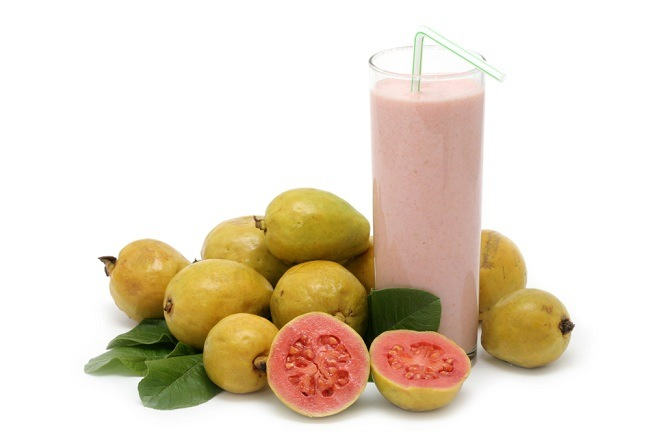

Jambu biji merupakan tanaman yang berasal dari Meksiko, Amerika Tengah, dan Amerika Selatan bagian utara. Buah yang juga disebut guava ini, kini dibudidayakan dan dapat dinikmati di banyak negara beriklim tropis dan subtropis, seperti Indonesia. Jambu biji kaya akan serat dan vitamin C, sedikit folat, dan zat lain yang bertindak seperti antioksidan. Bahkan, jumlah vitamin C dalam jambu biji empat kali lebih banyak dari jeruk.
Lalu apa saja manfaat jambu biji yang kita bisa nikmati? Mari kita telusuri bersama-sama di bawah ini.
Antioksidan
Antioksidan melindungi tubuh dari kerusakan yang disebabkan oleh molekul-molekul berbahaya yang disebut radikal bebas. Banyak ahli percaya kerusakan oleh radikal bebas ini merupakan faktor berkembangnya penyakit pembuluh darah (aterosklerosis), kanker, dan penyakit lainnya. Tidak hanya buah jambu biji, ternyata daunnya juga mengandung antioksidan.
Fitonutrien
Buah berwarna merah seperti jambu biji, semangka, dan tomat mengandung bahan kimia alami fitonutrien yang dapat memelihara kesehatan mata dan prostat.
Vitamin A
Buah berwarna cerah mengandung lebih banyak nutrisi jika dibandingkan dengan buah yang warnanya lebih pucat. Buah berwarna cerah seperti jambu biji, tomat, jeruk, dan mangga kaya akan karotenoid, yaitu vitamin A yang dapat membantu mencegah penyakit jantung. Vitamin A juga bisa mencegah munculnya masalah pada mata, menjaga pertumbuhan dan perkembangan sel-sel, meningkatkan sistem kekebalan tubuh, dan membuat kulit tetap sehat. Dengan kandungan vitamin A di dalamnya, Anda mendapat banyak manfaat jambu biji yang baik bagi kesehatan.
Vitamin C
Vitamin C penting untuk kesehatan tulang, gigi, gusi, dan pembuluh darah, membantu dalam penyembuhan luka dan fungsi otak, serta membantu tubuh menyerap zat besi. Vitamin C juga diperlukan untuk membentuk kolagen, yaitu jaringan yang membantu menahan sel bersama-sama.
Menurunkan tekanan darah dan kolesterol
Sebuah penelitian menungkapkan bahwa mengonsumsi buah jambu biji diduga dapat menurunkan kolesterol jahat LDL dan tekanan darah. Manfaat jambu biji ini diperoleh berkat kandungan kalium dan serat.
Mencegah diabetes
Dalam satu studi terhadap tikus ditemukan bahwa buah jambu biji diduga dapat melindungi ginjal dari perkembangan diabetes. Penelitian lain juga mengemukakan jika jambu biji merah diduga secara signifikan dapat mengurangi gejala diabetes, serta mengurangi kerusakan akibat proses peradangan dan oksidasi pada penderita diabetes.
Demam berdarah
Menurut penelitian, ekstrak daun jambu biji diduga dapat menghambat pertumbuhan virus dengue. Daun jambu biji yang direbus pun diduga dapat menghindari perdarahan pada DBD, dan peningkatan jumlah trombosit 100.000/mm3 dalam jangka waktu sekitar 16 jam.
Manfaat-manfaat lain
Dalam pengobatan tradisonal, jambu biji sering kali diolah menjadi jus untuk membantu menyembuhkan luka dalam atau teh untuk menyembuhkan sakit kepala, Jika terserang diare, masyarakat tinggal mengunyah daunnya. Mengatasi sakit perut, batuk, katarak, penyakit jantung, dan kanker juga diduga merupakan manfaat jambu biji lainnya.
Manfaat jambu biji memang banyak, namun penelitian lebih lanjut masih sangat diperlukan untuk mendukung atau membuktikan keampuhan berbagai pernyataan tersebut. Tapi, jangan sampai hal tersebut membuat Anda ragu dalam mengonsumsi jambu biji.